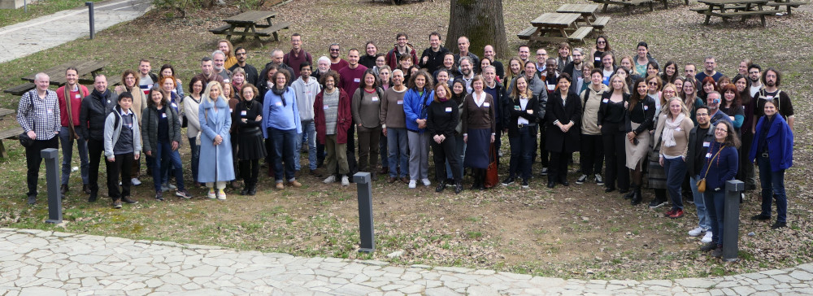

 sourced from UniDive COST Action CA21167, licensed under CC BY-SA 4.0.
PARSEME Corpora
The PARSEME multilingual corpora have been annotated with VMWEs to serve, notably, as both training and testing resources for shared tasks (Savary et al. 2017; Ramisch et al. 2018, 2020) , with the aim of enhancing the identification of VMWEs in written content. Presently in version 1.3, the PARSEME corpora encompass 26 languages, including French. Collectively, the corpora comprise \(455,629\) sentences, equivalent to 9 million tokens, and \(127,498\) VMWEs. Specifically, the French corpus contains \(20,961\) sentences, equivalent to \(525,842\) tokens, with \(5,655\) annotated VMWEs .
The VMWE types are detailed in the annotation guidelines. The VMWE types annotated specifically for French are as follows:
- IRV (inherently reflexive verbs): e.g. s’évanouir (lit. ‘to faint oneself’) ‘to faint’
- LVC.full (light verb constructions in which the verb is semantically totally bleached): e.g. faire une présentation ‘to make a presentation’
- LVC.cause (light verb constructions in which the verb adds a causative meaning to the noun): e.g. donner le droit ‘to grant the right’
- VID (verbal idioms ): e.g. se faire des idées (lit. ‘make oneself ideas’) ‘to imagine something false’
- MVC (multi-verb constructions): e.g. ce mot veut dire autre chose (lit. ‘this word wants to mean something else’) ‘this word means something else’
References
Ramisch, Carlos, Silvio Ricardo Cordeiro, Agata Savary, Veronika Vincze, Verginica Barbu Mititelu, Archna Bhatia, Maja Buljan, et al. 2018.
“Edition 1.1 of the PARSEME Shared Task on Automatic Identification of Verbal Multiword Expressions.” In
Proceedings of the Joint Workshop on Linguistic Annotation, Multiword Expressions and Constructions (LAW-MWE-CxG-2018), edited by Agata Savary, Carlos Ramisch, Jena D. Hwang, Nathan Schneider, Melanie Andresen, Sameer Pradhan, and Miriam R. L. Petruck, 222–40. Santa Fe, New Mexico, USA: Association for Computational Linguistics.
https://aclanthology.org/W18-4925.
Ramisch, Carlos, Agata Savary, Bruno Guillaume, Jakub Waszczuk, Marie Candito, Ashwini Vaidya, Verginica Barbu Mititelu, et al. 2020.
“Edition 1.2 of the PARSEME Shared Task on Semi-Supervised Identification of Verbal Multiword Expressions.” In
Proceedings of the Joint Workshop on Multiword Expressions and Electronic Lexicons, edited by Stella Markantonatou, John McCrae, Jelena Mitrović, Carole Tiberius, Carlos Ramisch, Ashwini Vaidya, Petya Osenova, and Agata Savary, 107–18. online: Association for Computational Linguistics.
https://aclanthology.org/2020.mwe-1.14.
Savary, Agata, Carlos Ramisch, Silvio Cordeiro, Federico Sangati, Veronika Vincze, Behrang QasemiZadeh, Marie Candito, et al. 2017.
“The PARSEME Shared Task on Automatic Identification of Verbal Multiword Expressions.” In
Proceedings of the 13th Workshop on Multiword Expressions (MWE 2017), edited by Stella Markantonatou, Carlos Ramisch, Agata Savary, and Veronika Vincze, 31–47. Valencia, Spain: Association for Computational Linguistics.
https://doi.org/10.18653/v1/W17-1704.
{kind=link}